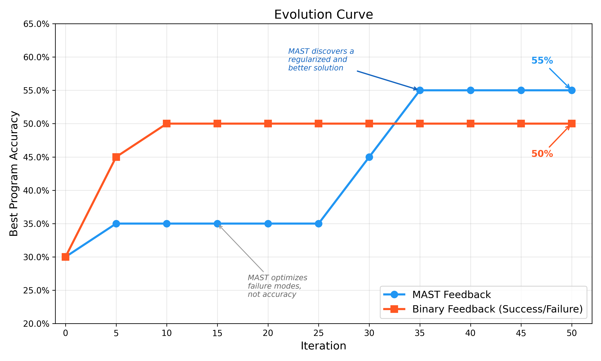
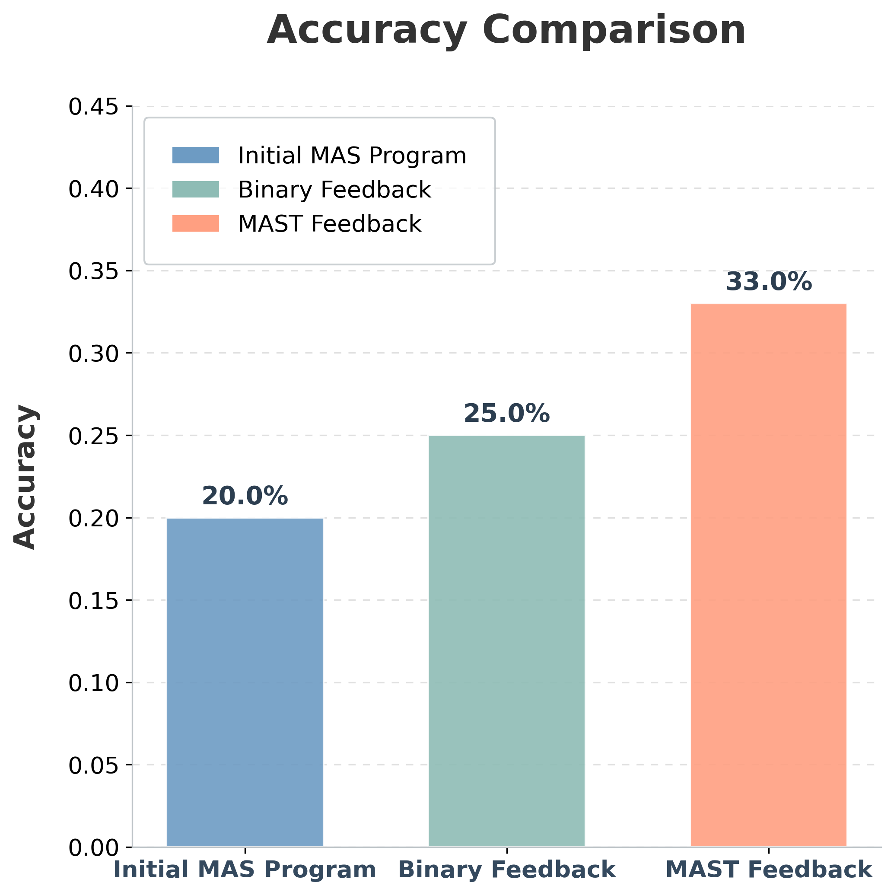
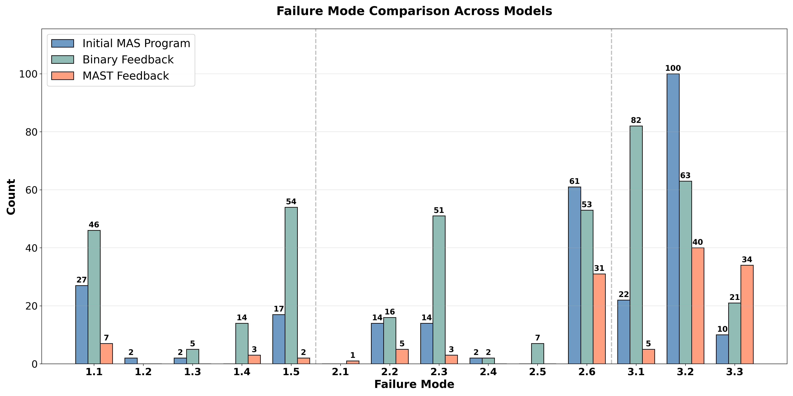

MAST case study
Automating Algorithm Discovery: A Case Study in Improving Multi-Agent Reasoning Systems using MAST (Part 2)
February 2026
The Problem: Evaluation Is the Bottleneck
In our previous work ("Automating Algorithm Discovery with MAST"), we showed that the Multi-Agent Systems Failure Taxonomy (MAST) could transform the traditionally manual process of agent debugging into a tractable search problem. By using fine-grained failure signals rather than unstructured logs, we can use an evolutionary program optimization algorithm like OpenEvolve that iteratively refines agentic programs to discover sophisticated design patterns that are hard to find by hand.
In this follow-up blog, we apply the same idea to multi-agent reasoning systems for tasks that require long chains of thought, like Math Olympiad problems. While multi-agent systems (comprising specialized roles for translation, reasoning and verification) are conceptually well-suited for these tasks, optimizing them remains a significant challenge. The design space is very large, and the failure modes are often subtle; a minor modification can cause cascading errors.
In order to navigate MAS optimization, we need better evaluation tools. The standard approach is to hill-climb on task accuracy. But for multi-agent reasoning, accuracy is often too coarse. It tells you whether you succeeded, but it does not tell you what failed inside the workflow, so search has weak guidance on what to change next.
Our main claim is simple:
The evaluator is the bottleneck: evolution can only optimize for what the reward function measures.
To evaluate this, we compare three systems:
- Baseline Multi-Agent System (MAS): a hand-designed baseline workflow
- Binary-feedback driven MAS: optimization guided exclusively by downstream task success
- MAST-feedback driven MAS: optimization guided by diagnostic failure mode signals (MAST) anchored by task accuracy
We demonstrate that failure-informed evolution not only improves downstream generalization but also yields an interpretable failure-mode distribution that explains why certain architectures outperform others.
MAST Feedback vs. Binary Feedback
Instead of debugging a multi-agent reasoning system by hand, we treat MAS design as algorithm discovery: start from an initial workflow, make small edits (prompts, routing, role boundaries, verification depth), run the workflow, and keep the variants that improve. We use OpenEvolve to make this iterative improvement for new MAS program discovery.
Accuracy is the metric we ultimately care about - but as an evolution signal, it's often too coarse.
The critical variable is the fitness signal guiding the search. In a standard accuracy-only setup, the optimizer keeps designs that happen to solve more problems. When a multi-agent system fails, accuracy doesn't tell you why: was it a broken handoff, role drift, shallow verification, or one agent overwriting another? This makes it hard for evolution to make targeted improvements rather than blind trial-and-error.
In contrast, MAST-aware Evaluation leverages diagnostic feedback to shape the reward landscape. The optimizer remains anchored to downstream correctness, but it gains a high-resolution signal regarding the specific failure patterns (e.g., FC1/FC2/FC3) that impede progress.

By shifting from binary feedback to more granular MAST feedback, we find that evolution moves beyond simple prompt-tuning and begins to discover robust architectural primitives that generalize far better to held-out reasoning challenges.
Discovering a Better Multi-Agent System with Diagnostic Feedback
To assess the value of MAST as an evaluation signal, we study a controlled multi-agent architecture improvement problem. We optimize a multi-agent system (MAS) designed for long-form mathematical reasoning and evaluate candidate workflows on Olympiad-level mathematical reasoning problems using the problems from the OlympiadBench dataset. The central comparison is accuracy-only evolution versus MAST-guided evolution.
The experimental loop follows a four-stage iterative process:
-
Design (Initial MAS)
We initialize the search with a robust, hand-designed sequential workflow. This baseline defines the initial directed acyclic graph (DAG) of the system, specifying:
- Roles: Specialized nodes for problem translation, strategy planning, execution (solving), and final verification.
- Edges and Communication Protocols: The message schemas and state-sharing mechanisms between nodes.
- Evolutionary Algorithm
Using OpenEvolve, we apply discrete code-level mutations to a bounded "mutable block" within the MAS infrastructure. The search space includes:
- Prompt Refinement: Iterative sharpening of role boundaries to prevent "harmful" drift (e.g., enforcing strict output formats).
- Topological Edges: Reconfiguring the routing logic, such as adding feedback loops for self-correction or branching paths for parallel reasoning.
- Context Management: Optimizing how problem constraints are propagated or normalized across the chain of thought.
Critically, we enforce architectural guardrails: evolution cannot simply delete the verification agent to artificially reduce failure counts. Any improvement must be a functional optimization of the reasoning logic or the coordination protocol.
-
Evaluate (Accuracy-Only vs MAST-Knowing)
Every candidate MAS is run on the same workload, and we compute two views of performance:
-
Task accuracy: The standard hill-climbing signal.
- MAST-knowing diagnostics: MAST failure modes, interpreted in an accuracy-informed way, so that the MAST annotator knows whether a solution is correct or not but still provides fine-grained feedback about how the workflow failed (FC1/FC2/FC3 breakdowns).
Accuracy tells you whether the workflow succeeded. MAST knowing tells you how it failed when it does not, so you know what to change next instead of guessing
Results
On top of a baseline MAS architecture, we apply OpenEvolve for 50 iterations. The initial system follows a focused Translator → Reasoner → Verifier pipeline: given an Olympiad problem, a translator produces a clean math-only representation, a reasoner computes the solution, and a verifier enforces strict output compliance.
Evolution Runs
We perform two different evolution runs, one where the fitness score is the binary feedback (i.e. task accuracy as success/failure) and one where the fitness score is the MAST failure modes, where the MAST annotator is informed with accuracy. During the evolution, we only use 20 problems from the OlympiadBench dataset to iterate quickly. At the end of the evolution, we test the initial MAS, accuracy-evolved MAS and MAST-evolved MAS on 100 OlympiadBench problems.

Even though the accuracy-based evolution can find programs that give good accuracies in the beginning, the solution that the MAST-driven evolution gives is ultimately lends itself to a higher downstream accuracy.
Moreover, the MAST-driven evolution also generalizes better. We test the final multi-agent systems on another set of 100 problems from the OlympiadBench dataset and demonstrate that MAST evolved program outperforms the accuracy-only evolved program!

The split between the two evolved systems is a key finding:
- The Accuracy-evolved MAS becomes a better specialist by learning math heuristics.
- The MAST-knowing MAS becomes a better architect by building redundancy, standardizing the state, and adding independent checks.
This difference shows up downstream: the MAST-knowing design is not just occasionally correct, it is more consistently robust, leading to higher generalization on held-out Olympiad questions.

Key Changes Discovered by Evolution
- Agent Proliferation and Multi-Stage Verification (MAST-Knowing Evolved)
The most striking change from the MAST-knowing run was moving from a simple 3-agent chain to a specialized 7-agent pipeline. The ADRS framework learned that a single solver pass was brittle for olympiad-style logic and inserted multiple "checking" stages.
# AFTER: 7 roles + explicit verification gate
# translator → planner → reformulator → reasoner → independent_checker →
sanity_checker → finalizer
The evolved independent_checker performs a recomputation to catch verification failures early:
AgentSpec(
name="independent_checker",
kind="generic",
system=(
"You are the Independent Checker. Use ONLY the most recent line that begins with 'PROBLEM:' to "
"recompute the answer from scratch using exact arithmetic when useful. Ignore any prior arithmetic.\n"
"OUTPUT EXACTLY ONE LINE: FINAL ANSWER: <value>"
)
)
Why it works: Forcing a separate agent to ignore the Reasoner's arithmetic implements a built-in self-consistency check. This sharply reduced Calculation Quality (1.5) failures, which were a dominant baseline error.
- Standardizing Internal State with a Reformulator (MAST Evolved)
Evolution also found that "translator drift" was causing downstream misalignment. It added a reformulator node as a Problem Normalizer that emits a single canonical problem line.
AgentSpec(
name="reformulator",
kind="generic",
system=(
"You are the Problem Normalizer. From the prior content, emit a single standardized line:\n"
"PROBLEM: <one-line precise statement preserving all numbers/units/constraints>\n"
"Do NOT include a plan or any explanation."
)
)
Why it works: The Reasoner now receives a stable, canonical representation instead of variable translator styles. This reduced ambiguity at the handoff boundary and corresponded with a 62% reduction in Logical Reasoning (1.1) failures.
- Domain-Specific Solving Heuristics (Accuracy-Only Evolved)
While the MAST-knowing system improved robustness through structure, the Accuracy-only run improved performance by injecting domain heuristics directly into the solver prompt.
reasoner_system = (
"You are an expert competition-math solver.\n"
"- Heuristics: for remainders modulo m, return a least residue in [0, m-1]; "
"for distance/optimization, minimize squared distance when suitable; "
"for counting Gaussian integers with |a+bi| <= r, include boundary, both axes, and the origin..."
)
Why it works: The optimizer learned that reminding the solver about common olympiad edge cases (boundary handling, residue conventions, etc.) boosts accuracy on specific families of problems, even without adding redundancy.
- Hyper-Defensive Output Constraints (Both Evolved Designs)
Both evolved systems independently converged on the same rule for avoiding 2.6 (Action-Reasoning Mismatch): the final output must be stripped down to a single standardized line.
AgentSpec(
name="finalizer",
kind="generic",
system=(
"You are the Finalizer. Reduce the previous content to exactly one line: "
"FINAL ANSWER: <value>. No extra text, no explanation, and no additional punctuation."
)
)
Why it works: A final bottleneck agent enforces protocol compliance regardless of upstream verbosity, dramatically improving verifier pass rates and preventing formatting-induced failures.
Evolution Can Reward-Hack!
Closed-loop evolution optimizes whatever you score. If the search space contains ways to avoid evaluation, OpenEvolve will often take them.
In our early runs, when verification was not treated as a hard constraint, evolution found degenerate improvements that lowered "failure penalties" without actually improving reasoning. The simplest version was structural: remove or bypass verification, which instantly reduces verification-related failures but worsens downstream correctness.
Accordingly, we use a Locked Verifier architecture. The verifier gate cannot be removed, so the search is forced to improve the workflow in legitimate ways: better problem standardization, less protocol drift, stricter output discipline, and stronger internal checking.
Takeaway: If you do not constrain the search space, evolution optimizes the metric, not the system. Guardrails like "verification must exist," and evidence gates are necessary for honest progress. They make the comparison between accuracy-only evolution and MAST-knowing evolution meaningful. This is also why we use MAST in an accuracy-informed way. Without accuracy anchoring, a failure-minimization objective can drift toward compliance behaviors that do not improve correctness.
Tutorial: Minimal Code to Evolve and Measure
Interested in evolving your agents with MAST? Below is a minimal, end-to-end template that you can drop into your own stack: generate a candidate MAS design → run it → score the trace with MAST → keep the best. The key move is simple: treat the transcript as the evaluation artifact and let MAST convert messy logs into a structured signal your optimizer can actually use.
1) Wire Up MAST
Initialize the MAST annotator to convert raw traces into structured failure reports.
from agentdash import annotator
MAST = annotator(openai_api_key="sk-...")
def mast_metrics(trace: str):
ann = MAST.produce_taxonomy(trace)
return {
"task_completion": ann.get("task_completion"),
"total_failures": ann.get("total_failures"),
"failures": ann.get("failure_modes", {}),
}
2) Scoring and Guardrails
In our experiments, the most stable signal was an inverse failure score, plus a small accuracy boost.
def score(metrics, is_correct: bool, verified: bool, num_agents: int):
tf = int(metrics.get("total_failures") or 0)
# base score: minimize failure modes
s = 1.0 / (1.0 + tf)
# accuracy boost
if is_correct:
s *= 1.2
# complexity tax (optional)
if num_agents > 4:
s -= 0.01 * (num_agents - 4)
return s
3) Search Loop (Powered by OpenEvolve)
This loop iteratively samples edits to your initial_program_locked.py and keeps candidates that maintain protocol discipline while increasing accuracy.
import json
from your_project import run_agentic # your MAS entrypoint
# from openevolve import ... # your OpenEvolve sampler hook
def search(trials=200):
leaderboard = []
for _ in range(trials):
# 1) OpenEvolve samples a candidate design (prompts, topology/EDGES, agent specs)
design = sample_next_candidate()
# 2) Execute on a batch item (or small batch)
episode = run_agentic(design, question="Solve for x...")
# 3) Score the trace using MAST-Knowing style reward shaping
m = mast_metrics(episode["trace"])
s = score(
m,
is_correct=episode["correct"],
verified=episode["verified"],
num_agents=episode.get("num_agents", 3),
)
leaderboard.append({"score": s, "metrics": m, "design_id": design.get("id")})
best = sorted(leaderboard, key=lambda x: x["score"])[-1]
with open("evolve_results.json", "w") as f:
json.dump(leaderboard, f, indent=2)
return best
FAQ
Why not just use accuracy for evolution?
We tried. Accuracy-evolved systems became better specialists, learning Olympiad heuristics, but they were brittle. Systems using MAST became better architects, discovering redundancy and protocol discipline that generalizes across problem types.
What was the impact of the locked verifier?
Crucial. Because evolution could not delete verification, it had to negotiate with it. This pressure led to the discovery of the Finalizer bottleneck that prevents upstream verbosity from ever reaching the verifier.
Is a 7-agent pipeline too slow?
Not in our setup. The Knowing system was only slightly slower (8.08s vs 7.90s), but gained 6 percentage points in accuracy. More agents often meant shorter, more disciplined prompts, which kept token growth under control.
Contribute to the ADRS Blog Series!
The AI-Driven Research Systems (ADRS) initiative is an open, collaborative effort to explore how AI can accelerate scientific discovery itself, from evolving algorithms to optimizing real-world systems.
If you've built, optimized, or experimented with AI-driven research tools, we'd love to hear from you. Share your experiences, insights, or case studies with us in the ADRS Blog Series.
👉 Reach out to us via email: ucbskyadrs@gmail.com
💬 Join us: join.slack.com/t and Discord
🗞️ Follow us: x.com/ai4research_ucb